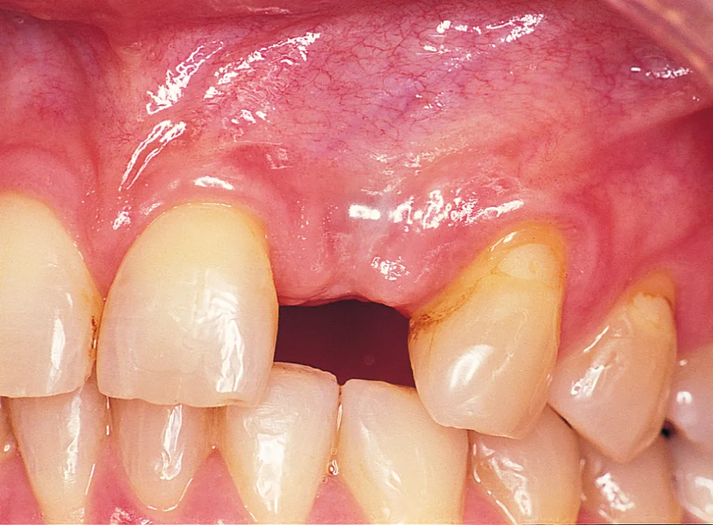
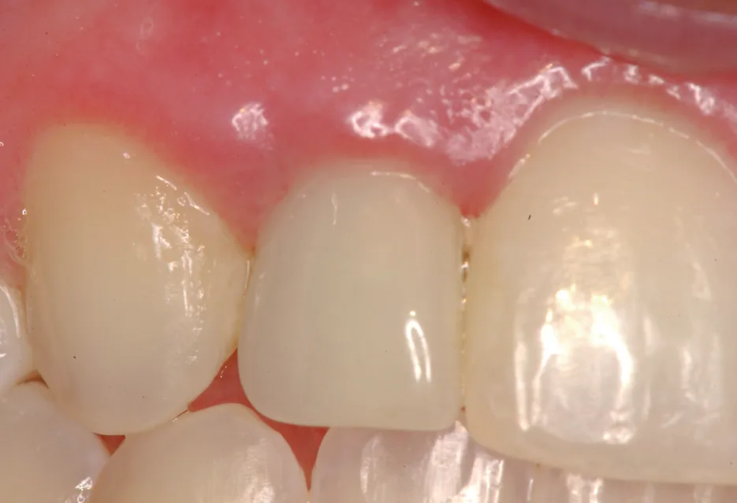

نسخه استخراجشده؛ ترجمه یا تأیید علمی انجام نشده است. وضعیت: captured
یکی از پرتکرارترین ناامیدیهای زیبایی در ایمپلنت، انتظار پاپیلایی است که از نظر زیستی ساخته نمیشود.
میان دو دندان طبیعی: وقتی فاصلهی نقطهی تماس تا کرست استخوان ۵ میلیمتر یا کمتر بود، پاپیلا کامل بود. با کسر اتصال بافت همبند فوقکرستال که حدود ۱ میلیمتر ارتفاع دارد، ارتفاع خود پاپیلا در بیشتر موارد به حدود ۴ میلیمتر محدود میماند.
در ترمیم تکایمپلنتی کنار دندان طبیعی: ارتفاع پاپیلا بهطور مداوم حدود ۴ میلیمتر بود؛ یعنی پاپیلا اینجا هم یک حد زیستی حدود ۴ میلیمتر دارد — هماندازهی پاپیلای بین دو دندان — و سطح اتصال بافت همبند روی دندان مجاور تعیینش میکند.
میان دو ایمپلنت مجاور: ارتفاع «پاپیلا» — یعنی بافت نرم کرونال به کرست استخوان که روی رادیوگرافی اندازهگیری شد — حدود ۳٫۱ میلیمتر بود، برای هر دو سیستم ایمپلنت. در مطالعهی دیگری میانگین ارتفاع ۳٫۴ میلیمتر بود و ۹۰ درصد اندازهگیریها در بازهی ۲ تا ۴ میلیمتر قرار داشتند.
جمعبندی روشن است: بافت نرم میان دو ایمپلنت حداکثر ارتفاعی حدود ۳ تا ۴ میلیمتر خواهد داشت.
و یک یافتهی ضدشهودی: تفاوتی در ارتفاع «پاپیلا» میان محلهایی که فاصلهی افقی دو ایمپلنت کمتر از ۳ میلیمتر بود و محلهایی با فاصلهی ۳ میلیمتر یا بیشتر، یافت نشد. یعنی در این مطالعه، فاصلهی افقی تعیینکنندهی ارتفاع پاپیلا نبود.
پس از کشیدن دندان: ارتفاع پاپیلا در دندانهای مجاور حدود ۱ میلیمتر کاهش مییابد. این یعنی بخشی از پاپیلایی که پیش از کشیدن میبینی، پیش از آنکه ایمپلنتی گذاشته شود از دست رفته است.
نقش فنوتیپ در بازسازی: در دندانهای طبیعی، پاپیلاهایی با ارتفاع مشابه (۳٫۲ تا ۴٫۳ میلیمتر) پس از پروسیجرهای برهنهسازی جراحی دوباره شکل گرفتند، ولی در فنوتیپ ضخیم (تخت) بلندتر از فنوتیپ اسکالوپ برجسته. در پیگیری یکسالهی افزایش طول تاج با برهنهسازی استخوان، بازیابی بافت نرم در سطح باکال دندانها از سطح کرست برهنهشده در فنوتیپ ضخیم ۳٫۱ میلیمتر و در فنوتیپ نازک ۲٫۵ میلیمتر بود.

اگر ارتفاع پاپیلا سقف دارد، پس چه چیزی تعیین میکند فضای بیندندانی پر بهنظر برسد یا نه؟ پاسخ: فاصلهی نقطهی تماس تاجها تا کرست استخوان.
میان دو دندان طبیعی، اعداد پایه:
• فاصلهی ۵ میلیمتر یا کمتر → پاپیلا کامل بود.
• فاصلهی ۶ میلیمتر → پر شدن پاپیلا در حدود ۵۰ درصد موارد.
• فاصلهی ۷ میلیمتر یا بیشتر → در حدود ۷۵ درصد موارد ناقص بود.
کنار تکایمپلنت هم منطق همین است: هرچه نقطهی تماس میان تاج ایمپلنت و تاج دندان به لبهی انسیزال نزدیکتر باشد، پر شدن پاپیلا ناقصتر است؛ پس جای درست نقطهی تماس ضروری است.
و میان دو ایمپلنت مجاور، سختگیرانهتر: پر شدن کامل «پاپیلا» تنها در محلهایی رخ داد که فاصلهی کرست استخوان تا نقطهی تماس کمتر از ۴ میلیمتر بود.
چرا این تفاوت؟ چون بافت نرم میان دو ایمپلنت سقف کمتری دارد (۳ تا ۴ میلیمتر) نسبت به پاپیلای مجاور یک دندان طبیعی. هرچه ساختار طبیعی کمتری در کنارت باشد، حاشیهی خطای کمتری داری.
نتیجهی عملی که کل این درس به آن میرسد: وقتی فاصله بیشتر از این اعداد است، راهحل بافت نرم نیست. دو اهرم واقعی داری:
۱. پایین آوردن نقطهی تماس در طراحی ترمیم.
۲. بالا بردن کرست استخوان — که همان کاری است که در یونیتهای پیوند یاد گرفتی و باید پیش از کاشت انجام شود.
و یک عدد دربارهی بافت کنار تکایمپلنت: در ایمپلنتهای تکی قدامی ماگزیلا، بُعد مخاط در سطوح مزیال/دیستال — با bone sounding، یعنی از حاشیهی بافت نرم تا کرست — بهطور میانگین ۶ میلیمتر بود، در حالی که در دندانهای مجاور حدود ۴ میلیمتر؛ و این بُعد در فنوتیپ ضخیم بهطور معنادار بزرگتر بود.
و آنچه پیش از هر تصمیمی باید بدانی: هنگام جایگزینی دو دندان مجاورِ کشیدهشده با ترمیمهای ایمپلنتبنیاد، توپوگرافی کرست استخوان و ضخامت بافت نرم فوقکرستال است که جای حاشیهی بافت نرم میان ایمپلنتها را تعیین میکند. یعنی نتیجهی بافت نرم، پیش از جراحی بافت نرم رقم میخورد.

نوع سؤال: ساخت کلمه · 3 خانه
حروف منبع: ق · ف · س
نوع سؤال: ساخت کلمه · 4 خانه
حروف منبع: ت · ا · م · س